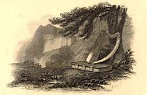
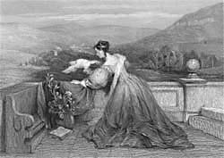
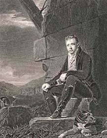
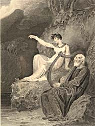
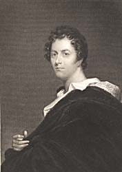
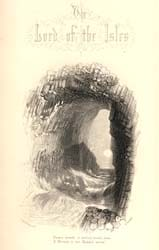

|
|
||||||||||
|
|
Home | Corson Collection | Biography | Works | Image Collection | Recent Publications | Portraits | Correspondence | Forthcoming Events | Links | E-Texts | Contact Scott the Poet
Scott's true debut in the literary world, though, was marked by the Minstrelsy of the Scottish Border, a collection of the traditional ballads that Scott had been collecting in yearly trips to the Borders from 1792 onwards. In many cases, Scott had not hesitated to 'improve' upon the original, changing words, inserting new stanzas, mending rhymes and rhythms, fusing various versions, and sometimes setting old legends to verses of his own. The first two-volume edition of the Minstrelsy (1802) also contained two previously published imitation ballads, 'Glenfinlas' and 'The Eve of St John', and a concluding 'Third Part' to the traditional ballad 'Thomas the Rhymer' of Scott's own composition.
Scott had originally intended to include in the Minstrelsy a transcription of Sir Tristrem, an incomplete medieval narrative romance, based on the legend of Tristram and Iseult, that formed part of the Auchinleck MS in the Advocates' Library. As the Minstrelsy rapidly expanded, he decided to publish it separately, along with arguments attributing it to the thirteenth-century poet Thomas of Ercildoune. When it appeared, however, in 1804, the fifteen-stanza conclusion was furnished by Scott himself in skillful imitation of the original poet's style. A further offshoot of the Minstrelsy was to develop into Scott's first major narrative poem. Among the imitation ballads that he had intended to include in the third volume was a lengthy piece interweaving a tale of sixteenth-century Border rivalry with the supernatural legends of the wizard Michael Scott and his goblin servant Gilpin Horner. The poem rapidly grew too long for inclusion in the Minstrelsy, and Scott began to conceive of it as a separate volume. Published in 1805, the Lay of the Last Minstrel enjoyed unprecedented sales for a work of poetry and brought Scott instant fame. Critics and public applauded Scott's skill in shaking off the stiffness of neo-classical verse while refining the perceived coarseness of the ballad tradition. The description of the moonlit Melrose Abbey (Canto II, stanza 1) brought a stream of sightseers to its ruins and was the first instance of Scott's immense impact on the nineteenth-century tourist industry. The Lay's success determined the line that Scott's work was to take over the next nine years as he produced a succession of major narrative poems. He nonetheless continued to compose shorter ballads based primarily on Border traditions. William Whyte's miscellany A Collection of Scottish Airs (1806-07) contains five pieces by Scott, all of which were destined to become much re-printed anthology pieces: 'Helvellyn', 'The Maid of Toro', 'The Maid of Neidpath' (illustrated, right), 'The Palmer', and 'Wandering Willie'. Scott's own 1806 collection Ballads and Lyrical Pieces contained eleven previously published pieces, together with 'The Norman Horse-Shoe' and 'The Dying Bard', which had only previously appeared in a privately printed pre-publication issue of the Lay of the Last Minstrel. In 1808 too, he inserted two ballads of his own, 'Hunting Song' and 'Bridal Song', into his edition of Joseph Strutt's historical romance Queenhoo-Hall. Scott's most concerted poetic effort during these years, however, went into his second narrative poem Marmion, set against the backdrop of Scotland's greatest military defeat, the battle of Flodden Field. In the title character, Scott created a new kind of anti-hero, an ambiguous mixture of villainy and open-hearted courage that would greatly influence the protagonists of Byron. On its publication in 1808, the critics were thrown by this disconcerting figure, judging him an altogether unsuitable subject for poetic celebration. The public, though, were conquered, turning Marmion into an even greater commercial success than the Lay of the Last Minstrel. Scott's fame had now reached such a height that his publisher Constable was able to commission a portrait of the poet from the celebrated painter Sir Henry Raeburn (engraved by John Horsburgh, above left). Scott's next narrative poem The Lady of the Lake (1810) would mark the pinnacle of his career as a poet. Set along the shores and islands of Loch Katrine, where Scott holidayed in August 1809, it dramatized the struggle between James V, sixteenth-century king of Scotland, and the powerful clan Douglas. Scott's aim was to rely less on spectacular action and scenery than on psychologically convincing characterization. For once, the critics were as enthusiastic as the public, praising Scott's depiction of 'real manners'. With 25,000 copies exhausted in eight months, The Lady of the Lake (illustrated, right) broke all records for the sale of poetry. For all Scott's desire to play down the 'local colour' element, the poem created a tourist vogue for Loch Katrine and the Trossachs which has endured to this day. Scott's next lengthy poem, The Vision of Don Roderick (1811), was essentially an occasional production, written to celebrate Wellington's successes in the Peninsular Campaign, with all profits to be donated to Portuguese war sufferers. Scott himself dismissed the poem upon its appearance as a piece of patriotic tub-thumping. The critics felt it to be a series of tableaux rather than a genuinely compelling narrative, but it was favourably greeted by the public, earning one hundred guineas for the Portuguese fund. Scott had a good deal more invested in its follow-up, 1813's Rokeby. Funds were urgently required to finance the building of his new home at Abbotsford and to counter the emerging financial difficulties of John Ballantyne and Co, in which Scott was a silent half-partner (see Financial hardship). Fearing that he might have sated the public's appetite for Scottish historical romances, he set his new poem in England, in the midst of the Civil War. For any other poet, Rokeby would have been a considerable commercial success but sales fell far short of The Lady of the Lake and failed to meet Scott's increasingly urgent needs. The critics, conversely, were highly favourable, but Scott began to sense that his poetic star was on the wane. He now had a formidable rival in Lord Byron (portrayed above), whose Child Harold's Pilgrimage (1812) had eclipsed even Scott's early successes. The conviction that he could not compete with Byron, whose work Scott always intensely admired, influenced the decision to experiment with prose narrative (see Scott the novelist). It was nonetheless at this point, in autumn 1813, that the Prince Regent offered Scott the vacant post of Poet Laureate. Scott immediately felt that such an appointment would be a poisoned chalice. The Laureateship had fallen into disrepute, as a succession of poetasters had churned out conventional and obsequious odes on royal occasions. Given, too, that Scott already occupied two public offices, as Sheriff Depute of Selkirkshire and Clerk of the Court of Session (see Professional Career), he might be accused of greed. On the other hand, it was a great honour that could not be lightly turned down, royal favour might assist his children's careers, and the salary would unquestionably alleviate his present difficulties.
While concentrating on longer verse narratives, Scott had still been publishing shorter songs and ballads in journals and anthologies. He contributed five pieces to John Ballantyne's 1810 miscellany English Minstrelsy and a series of poetic imitations to the Edinburgh Annual Register for 1809 (published 1811). These last included not only pastiches of Crabbe and Moore but a parody of his own style in 'The Vision of Triermain'. Indulging a lifelong love of mystification, he expanded the 'Vision' into a lengthier poem, The Bridal of Triermain which wove together Arthurian and medieval legends of an enchanted castle in the English Lake District. Published anonymously, The Bridal fooled almost all critics into thinking that it was an imitation of Scott rather than by Scott himself (though some thought it surpassed its model!). By now, though, Scott's major efforts had turned to prose. 1814 saw the publication of his first novel Waverley, an immediate success which persuaded Scott that his future lay in that line. He was to produce, though, one last major poetic work. The Lord of the Isles (1815) grew from a fragment dealing with the wanderings of Robert the Bruce that Scott had abandoned in favour of Rokeby. A voyage around the Western Isles in summer and autumn 1814 rekindled his inspiration, introducing Scott to the locations that are vividly described in the poem's dense narrative. After a worryingly slow start, the first edition sold out within a month but once again did not match the success of Marmion and The Lady of the Lake. Although for some critics it was amongst Scott's best work, others saw evidence of over-hasty composition, loose plotting and versification, and an exhausted vein of inspiration. From now on, Scott would essentially be 'the author of Waverley'. Two further minor poetic narratives were published but with modest critical and commercial success. The Field of Waterloo (1815) was based on Scott's visit to the battlefield shortly after Napoleon's defeat. Profits went to a fund set up for widows and orphans of soldiers, and sales were respectable. While some commentators were reluctant to criticize a poem produced in a worthy cause, others did not hesitate to censure it in the harshest terms for its clumsy structure and stilted phrasing. Finally, Harold the Dauntless (1817), the tale of a Viking Beserker, was published as another work by 'the author of the Bridal of Triermain'. Again, few critics detected Scott's hand, judging it rather a second-rate imitation which magnified the faults of its model. Such comments, combined with poor sales, merely confirmed Scott in his decision to specialize henceforth in prose fiction. While he contained to contribute to journals and miscellanies (such as A Select Collection of Original Irish Airs and Albyn's Anthology) and would later write the poetic dramas Halidon Hill (1822) and The Doom of Devorgoil (1830), the main vent for Scott's poetic Muse would now be the lyrics and poetic fragments inserted into his novels. Today, with the vogue for Scott's narrative verse not long outliving the nineteenth century, his reputation as a poet rests largely on such widely anthologized lyrics as 'Proud Maisie' (The Heart of Midlothian) and 'Lucy Ashton's Song' (The Bride of Lammermoor).
Links
Last updated: 17-July-2015
|
|||||||||